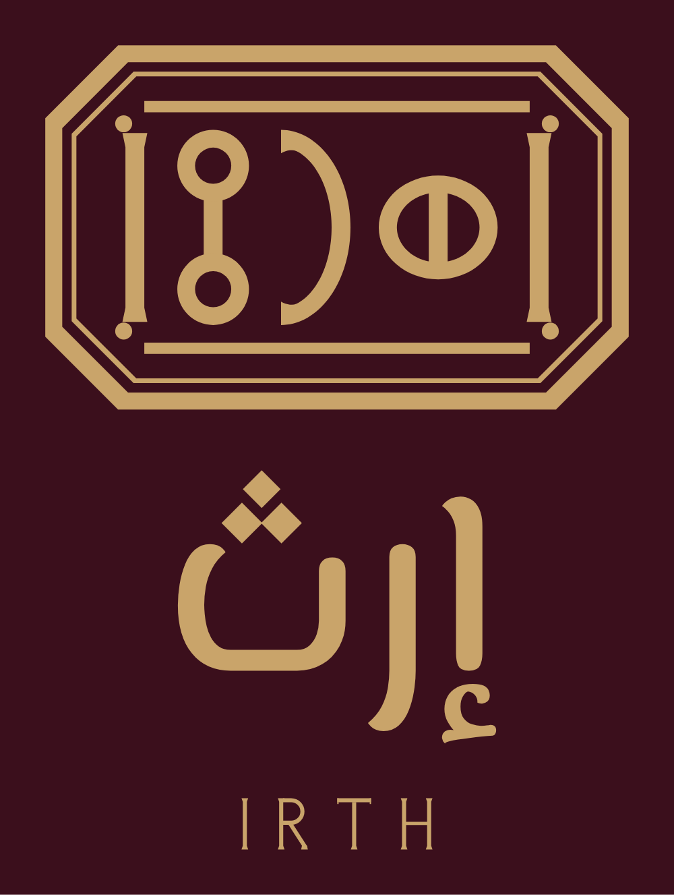
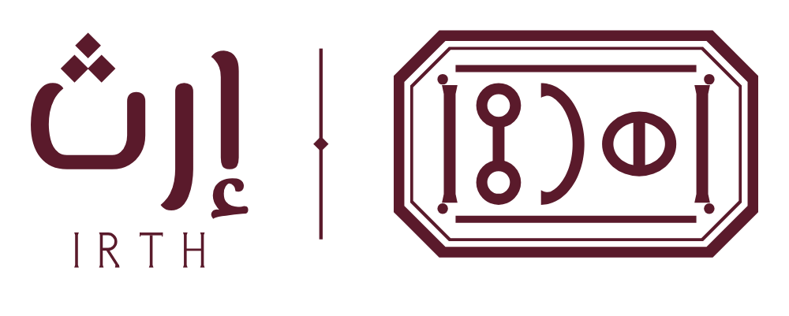

حزمة التطوير ١الاتجاه أ · الختم الموحّدIRTH · BRAND BOOK
الاتجاه أ · الختم الموحّد
يجتمع في الشعار اليوم ثلاثة أصوات: ختمٌ هندسي بضربة واحدة، واسمٌ بخط نسخي جاهز، وIRTH بخط لاتيني ثالث. في هذا الاتجاه تُرسم الأجزاء الثلاثة بيد واحدة، فلا يكتبها أحد بخط جاهز.



١الاسم العربي مرسوم بضربة حروف الختم نفسها، بقاعدة هندسية تشبه حلقات المسند.
٢نقاط الثاء معيّنات، كمعيّنات الهوية في الفواصل والشارات.
٣IRTH مرسوم لإرث: أطراف كل حرف تتسع كمسماري الختم.
٤النسب كما في ٢٫٥: الاسم ثلاثة أرباع الختم، وIRTH ستون في المئة من عرض الاسم.
إعداد وتصميم: م/ أحمد درهم حسين الفقيه — الشريك المؤسس ومدير المشروعU7